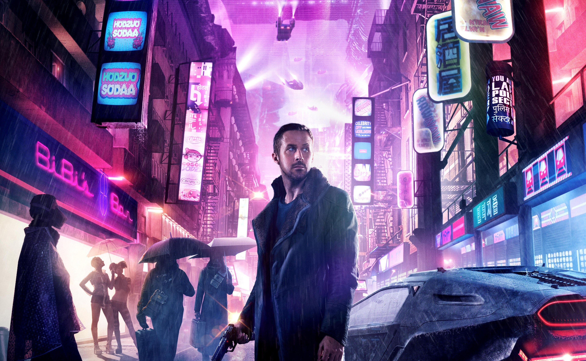
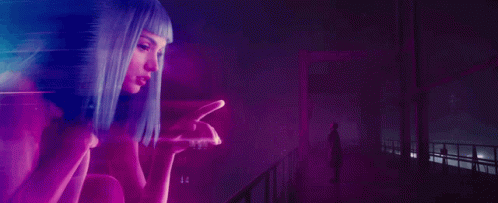

Em uma sociedade cada vez mais abraçada pela crescente onda de avanços tecnológicos, "Blade Runner 2049" emerge como um espelho assustador do nosso próprio destino. No coração dessa jornada cinematográfica, dirigida por Denis Villeneuve, encontra-se uma rede de interseções entre humanidade, inteligência artificial e as sombrias consequências de brincar de Deus.

Em um futuro incerto, onde o limite entre homem e máquina se esvai, o enredo nos apresenta um panorama desconcertante. O protagonista, interpretado por Ryan Gosling, assume o papel de um "Blade Runner", uma força encarregada de localizar e aposentar replicantes desobedientes. No entanto, o que se desenrola é muito mais do que uma simples caçada. O tecido da realidade é desgastado à medida que segredos há muito enterrados começam a emergir, ameaçando a estabilidade de uma sociedade já à beira do precipício.
No epicentro da narrativa está a busca por identidade, tanto para os replicantes quanto para os próprios humanos. A linha que separa o natural do artificial desaparece, enquanto o mundo enfrenta dilemas éticos de proporções monumentais. Os avanços tecnológicos, que prometiam uma era de maravilhas, culminaram em um horizonte sombrio de ambiguidade moral, onde a noção de humanidade é destroçada e redefinida diante de nossos olhos.


O passado e o presente colidem quando um personagem há muito desaparecido, interpretado por Harrison Ford, surge das sombras, trazendo à tona perguntas inquietantes sobre a própria natureza da consciência e a linha tênue entre criação e destruição. Nesse universo distópico, os fundamentos da realidade estão fadados a desmoronar, lançando o mundo em uma espiral descendente de questionamentos sem respostas claras.
"Blade Runner 2049" se eleva como mais do que um simples filme; é um aviso estrondoso para uma sociedade que flerta com a inteligência artificial, a busca desenfreada por progresso e a perda da humanidade em meio ao caos tecnológico. O filme nos desafia a confrontar os perigos palpáveis de nossas próprias ambições, enquanto nos mergulha em uma realidade inquietante que, de maneira assustadora, não parece tão distante de nossa própria trajetória.